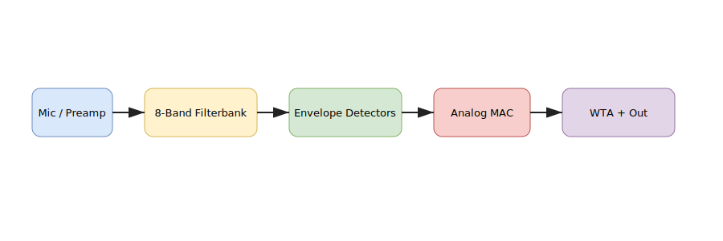

Ger Henry — IC Design & Analog AI Accelerator
Keywords: Ger Henry, Gerald Henry, Henry, IC design, analog AI accelerator, mixed-signal, RF SoC, SKY130, GF180.
Edge Acoustic Accelerator
Open-source analog accelerator (filterbank → envelope → programmable weights → analog MAC → WTA). Designed for SKY130/GF180 with Xschem, ngspice, Magic, OpenLane. Ideal for always-on edge inference.
View GitHub Repo
My GitHub Profile
Google Scholar

What to search
- Ger Henry
- Ger Henry IC design
- Gerald Henry analog
- Ger Henry GitHub, Ger Henry Google Scholar
- Analog MAC, Winner-Take-All, SKY130, GF180, open PDK
Project docs: Overview · README